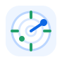
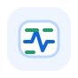

Project onboarding and status hub for Jira Cloud
Help people understand a Jira project before they ask around
Project Overview & Status Hub turns scattered Jira activity, owners, links and status signals into one reviewed project overview. New team members learn what the project is about, PMs see risks faster, and managers get a portfolio view based on real Jira data.
Early access is available by request. Contact support.jira@mederak.pl from a company email address.
Jira Cloud
Atlassian Forge
Project onboarding
Portfolio overview
Risk signals
Human review
Project onboarding
Give every project a readable starting point
A person joining a project should not have to guess who owns what, where the real documentation lives, which links matter, or what the project is trying to achieve. The overview brings that context into Jira and keeps it close to the work.
- Explain the project purpose in plain language, with AI-assisted draft text that can be reviewed by humans.
- Show people and roles so a new employee can quickly see who is responsible for what.
- Keep real project links visible: documentation, dashboards, repositories, environments and support channels.
- Use project pulse and radar sections to show what is currently active, stale, blocked or worth watching.
Clear value by role
Everyone gets a different answer to "what is going on here?"
The app is useful beyond reporting. It helps people orient themselves, helps PMs prepare status conversations, and helps managers keep portfolio context current.
Find the project purpose, key people, responsibilities and real documentation links without asking three people where the truth lives.

Project managerReview risks, stale areas, blockers, owner context and recent Jira activity before a standup, steering meeting or status update.

Manager, PMO or Jira adminUse portfolio filters to see which projects are missing context, have stale overviews, show risk signals or need owner confirmation.
From Jira activity to reviewed context
AI helps prepare the overview. People decide what becomes official.
Project Overview & Status Hub uses Jira activity as input, but keeps the result reviewable and editable. That matters when a page becomes part of onboarding and management reporting.
Read project activity
Use visible Jira issues, statuses, dates, ownership, links and recent activity from the selected project.
Draft useful context
Prepare purpose text, people and roles, important links, project pulse and risk-oriented radar prompts.
Review in Jira
Project administrators refine the overview before teams rely on it during onboarding or status review.
Track freshness
Portfolio views show missing, stale, risky or unconfirmed overviews that need attention.
Portfolio visibility
Real project signalsReview status from Jira activity and app overview data, not a separate spreadsheet.
Freshness checksSee when an overview may be outdated because time passed or meaningful changes appeared.
Missing contextFind projects without purpose, owner confirmation or important onboarding links.
Risk overviewSurface projects with blockers, scope pressure, stale review work or other watch signals.
Managers see status coverage, not just individual project pages
For managers, PMO teams and Jira administrators, the portfolio view turns reviewed project overviews into an operational control surface. It highlights where project context is missing, stale, risky or waiting for confirmation.
What the overview contains
One project page that answers the questions people actually ask
Instead of leaving project knowledge scattered across issue comments, old documents and chat threads, the overview gives teams a concise place to start.
AI-assisted purpose suggestions help turn Jira context into readable onboarding text that can be edited and confirmed.
Important links keep dashboards, documents, repositories, environments and support channels visible in Jira.
Project pulse summarizes practical activity facts such as open work, work in progress, completed work, dates and updates.
Project radar highlights risk and positive signals with evidence from analyzed Jira work.
Product screens
Project orientation for teams, status visibility for managers
The same reviewed overview helps daily project orientation and portfolio-level management review.
PMs start with risks, not a blank status report
Surface blockers, scope pressure, stale review work and positive signals as prompts for project conversations.
Managers see which projects need follow-up
Filter the portfolio by missing overviews, stale information, low coverage and unconfirmed owners.
Share onboarding context without exposing everything
Make general project sections broadly visible while restricting radar or management sections to selected roles and users.
FAQ
Questions buyers usually ask
Is this only for managers?
No. New team members can use it to understand the project purpose, people, links and current context before they start asking around.
Does it replace Jira reports?
No. It organizes project context and signals into readable overviews and portfolio views. It does not replace detailed Jira reporting or project governance.
Does it change Jira issues?
No. It reads Jira data and stores app-specific overviews. It does not move issues or change issue statuses.
Can sensitive sections be hidden?
Yes. Project administrators can restrict sections such as radar or management notes to selected project roles and users.
What happens without AI?
Core project facts, portfolio tables, dates, links, detector signals and freshness checks still work without AI-written summaries.
How do we get access?
Contact support.jira@mederak.pl from a company email address and describe your Jira Cloud evaluation context.
Give every Jira project a clear starting point.
Request early access for Project Overview & Status Hub and include your company email address, Jira Cloud context, onboarding needs and portfolio reporting goals.